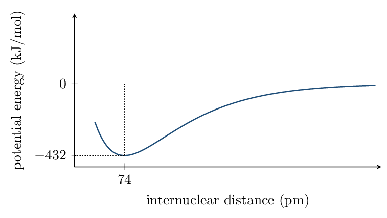

Bond Types and Potential Energy Wed Aug 26
- Classify bonding from electronegativity difference and element type.
- Read bond length and bond energy off a potential-energy curve.
Read: Zumdahl §8.1–8.3 • PDF pp. 391–400
Read: §8.8 • PDF pp. 412–415
- Configuration of \(\ce{Cl-}\): \([\ce{Ar}]\)
- Higher first IE: Mg or Al? Mg (Al's 3p e\(^-\) is higher-energy)
- Formula: calcium + fluorine: \(\ce{CaF2}\)
INSTRUCTION A • A spectrum of bonds, not three boxes 25 min
Types of chemical bonds CED 2.1
SP 4Bonding is a competition for electrons, scored by electronegativity (EN):
| Bond type | Typical partners | Electron behavior |
|---|---|---|
| Nonpolar covalent | two identical nonmetals | shared equally |
| Polar covalent | different nonmetals | shared unequally — partial charges \(\delta^+/\delta^-\) |
| Ionic | metal + nonmetal | transferred to the nonmetal |
| Metallic | metal + metal | delocalized “sea” over cations |
The AP exam treats these as a continuum: greater \(\Delta\)EN \(\to\) more ionic character. \(\ce{HF}\) is very polar covalent; \(\ce{NaCl}\) is mostly ionic. Don't fight over borderline cases — argue with \(\Delta\)EN.
Rank the bond polarity, least to most: \(\ce{C-H}\), \(\ce{C-F}\), \(\ce{C-O}\): \(\ce{C-H}\) \(<\) \(\ce{C-O}\) \(<\) \(\ce{C-F}\) (\(\Delta\)EN grows)
GUIDED PRACTICE • Classify and justify 15 min
For each substance: bond type + one-phrase justification.- \(\ce{Br2}\): nonpolar covalent — identical atoms
- \(\ce{K2O}\): ionic — metal + nonmetal, large \(\Delta\)EN
- \(\ce{NO}\): polar covalent — two nonmetals, small \(\Delta\)EN
- brass (Cu/Zn): metallic — delocalized electrons
INSTRUCTION B • The potential-energy curve 20 min
Why bonds form: the energy well CED 2.2
SP 4
- At large distance, PE \(\approx\) 0 — atoms don't interact.
- As atoms approach, PE decreases: each nucleus attracts the other's electron density.
- The minimum sits at the bond length (74 pm for \(\ce{H2}\)); its depth is the bond energy (432 kJ/mol).
- At very short distance PE shoots up: nucleus–nucleus repulsion dominates.
The minimum is a balance of attraction and repulsion — not “where attraction stops.” And breaking a bond requires energy (climb out of the well); forming one releases it. Bond breaking is never exothermic.
APPLICATION • Compare two wells 20 min
\(\ce{N2}\)'s well: minimum at 110 pm, depth 945 kJ/mol. \(\ce{H2}\): 74 pm, 432 kJ/mol.- Which bond is stronger, and what feature of the curve says so?
- \(\ce{N2}\)'s bond is a triple bond. Connect that to both numbers.
- On one set of axes, sketch curves for \(\ce{F2}\) (bond energy
155 kJ/mol, length 142 pm) and \(\ce{H2}\). Label which is which.
\(\ce{F2}\): shallower well (155), minimum farther right (142 pm). \(\ce{H2}\): deeper (432), minimum at 74 pm.
On a PE curve, what two pieces of information does the minimum give you?
Ionic Solids, Metals, and Alloys Fri Aug 28
- Rank lattice energies using Coulomb's law.
- Explain metallic properties from the electron-sea model; classify alloys.
Read: Zumdahl §8.5 • PDF pp. 404–408
Read: §10.4, 10.7 • PDF pp. 505–511, 520–523
- Most polar bond: \(\ce{H-F}\), \(\ce{H-Cl}\), or \(\ce{H-Br}\)? \(\ce{H-F}\)
- On a PE curve, bond energy is the well depth.
- Smaller radius: \(\ce{Na+}\) or \(\ce{Mg^2+}\)? Why (5 words)? \(\ce{Mg^2+}\) — more protons, same e\(^-\)
INSTRUCTION A • Ionic solids and lattice energy 25 min
The lattice and its energy CED 2.3
SP 6 An ionic solid is a 3-D lattice: each cation surrounded by anions and vice versa — no “\(\ce{NaCl}\) molecule,” just a repeating ratio. The lattice energy is the energy change when gaseous ions assemble into the solid; its magnitude follows Coulomb's law:- Compare charge products first — they dominate.
- Tie? Compare ionic radii — smaller ions, stronger lattice.
Charge products: MgO \((2\times2)=4\); NaF and NaCl \((1\times1)=1\). So MgO is far strongest. Tiebreak NaF vs NaCl: \(\ce{F-}\) is smaller than \(\ce{Cl-}\), so NaF \(>\) NaCl. Final: \(\ce{MgO} \gg \ce{NaF} > \ce{NaCl}\).
Consequences you can be asked to explain: high melting points (strong electrostatic attractions throughout the lattice), brittleness (shifting layers aligns like charges \(\to\) repulsion \(\to\) cleave), and conductivity only when molten or dissolved (ions must be mobile).
GUIDED PRACTICE • Lattice ranking 15 min
Rank by melting point, highest first, one reason each: \(\ce{KCl}\), \(\ce{CaO}\), \(\ce{KBr}\).
INSTRUCTION B • Metals and alloys 20 min
The electron sea CED 2.4
SP 1Metallic bonding: cations in fixed positions, valence electrons delocalized over the whole sample. This one model explains:
- conductivity: mobile electrons carry charge
- malleability: layers slide without aligning like charges (contrast: ionic solids shatter)
- luster, thermal conduction: same mobile sea.
Alloys
- Substitutional: similar-size atoms replace host atoms (brass: Zn for Cu).
- Interstitial: small atoms fill gaps between hosts (steel: C in Fe). Interstitials pin sliding layers \(\to\) harder, less malleable.
APPLICATION • Model-based predictions 20 min
- Solid \(\ce{NaCl}\) does not conduct; molten \(\ce{NaCl}\) does. Solid Cu conducts either way. Explain both with particle-level models.
- Pure iron bends easily; steel (Fe + small % C) resists. Why, at the particle level?
Predict which has the higher melting point, \(\ce{LiF}\) or \(\ce{CsBr}\), with the two-step Coulombic argument.
Lewis Diagrams Mon Aug 31
- Draw Lewis diagrams for molecules and polyatomic ions quickly and correctly.
- Know the octet exceptions the AP exam actually tests.
Read: Zumdahl §8.9–8.11 • PDF pp. 415–423
- Stronger lattice: \(\ce{MgS}\) or \(\ce{NaCl}\)? Why? \(\ce{MgS}\) — \(2\times2\) charge product
- Valence electrons in \(\ce{P}\): 5
- Valence electrons in \(\ce{SO4^2-}\) total: \(6+4(6)+2 = 32\)
- Steel is which alloy type? interstitial
INSTRUCTION A • The five-step draw 25 min
Lewis diagrams CED 2.5
SP 1- Count total valence electrons (add for anions, subtract for cations).
- Skeleton: least electronegative atom central (never H); connect with single bonds.
- Complete outer atoms' octets (H gets 2).
- Leftovers go on the central atom.
- Central atom short? Convert lone pairs to multiple bonds.
The exceptions worth knowing
- Odd-electron species (\(\ce{NO}\), \(\ce{NO2}\)): someone keeps an unpaired electron.
- Incomplete octet: \(\ce{BF3}\) — B holds 6 happily.
- Expanded octet: period-3+ central atoms (\(\ce{SF6}\), \(\ce{PCl5}\)) may hold more than 8 — possible because \(n\ge3\).
GUIDED PRACTICE • Draw four 15 min
Draw Lewis diagrams (show electron count first): \(\ce{NH3}\), \(\ce{HCN}\), \(\ce{ClO-}\), \(\ce{PF5}\)INSTRUCTION B • Bond order, length, strength 20 min
What the drawing predicts CED 2.5
SP 4More shared pairs \(\to\) higher bond order \(\to\) shorter and stronger bond.
C–O bond in three species:
| \(\ce{CH3OH}\) | \(\ce{CO2}\) | \(\ce{CO}\) | |
|---|---|---|---|
| bond order | 1 | 2 | 3 |
| length | longest | middle | shortest |
APPLICATION • Diagnose broken diagrams 20 min
Each diagram below has one error; name it and fix it.- \(\ce{H2O}\) drawn with H–O–H and two lone pairs on each H.
- \(\ce{CO3^2-}\) drawn with 22 electrons.
- \(\ce{NO+}\) drawn with a double bond and 12 electrons.
Total valence electrons in \(\ce{PO4^3-}\), and is an expanded octet allowed on P?
Formal Charge and Resonance Wed Sep 2
- Compute formal charge and use it to select the best structure.
- Draw complete resonance sets and state their physical meaning.
Read: Zumdahl §8.12 • PDF pp. 423–427
- Valence electrons in \(\ce{NO3-}\): \(5+18+1=24\)
- Shortest C–O bond: \(\ce{CO}\), \(\ce{CO2}\), or \(\ce{CH3OH}\)? \(\ce{CO}\)
- Central atom in \(\ce{OCS}\) (carbon compound): C (least electronegative)
INSTRUCTION A • Formal charge: the tiebreaker 25 min
Formal charge CED 2.6
SP 5- formal charges closest to zero;
- any negative FC on the more electronegative atom;
- FCs summing to the species' overall charge (always — this is a check, not a preference).
Candidate skeletons: O–C–N vs C–O–N. For O–C–N with a C\(\equiv\)N triple: FC(O)\(=-1\), FC(C)\(=0\), FC(N)\(=0\) — sum \(-1\) ✓, minimal charges, negative on electronegative O. The C–O–N skeletons force larger charges (e.g. \(+1\) on O). Carbon takes the center; formal charge proves it.
GUIDED PRACTICE • Compute and choose 15 min
For \(\ce{CO2}\) drawn two ways — (i) two double bonds; (ii) single + triple:- FCs for (i): 0, 0, 0
- FCs for (ii): \(-1\) (single-bond O), 0, \(+1\)
- Which is better and why? (i) — all formal charges zero
INSTRUCTION B • Resonance 20 min
When one drawing isn't enough CED 2.6
SP 1If the electron-pushing step could go more than one equivalent way, draw all of them connected by double-headed arrows. The molecule is the average — a resonance hybrid — not a movie flipping between forms.
“The bond switches back and forth” scores zero. The measured structure is one static average: equal bond lengths, fractional bond order, charge spread over equivalent atoms. Cite the evidence (equal lengths) when asked what resonance means.
APPLICATION • Full resonance analysis 20 min
For carbonate, \(\ce{CO3^2-}\):- Draw all three resonance forms.
Three forms, double bond rotating among the O's; 24 e\(^-\) each; brackets with \(2-\).
- Bond order of each C–O bond: \(4/3\)
- Predict how the C–O length compares with the C–O single bond in \(\ce{CH3OH}\) and the C=O in \(\ce{H2CO}\).
- Each O carries what average charge? \(-2/3\)
VSEPR: Shapes from Repulsion Fri Sep 4
- Predict electron-domain and molecular geometries through 6 domains.
- Explain bond-angle deviations with lone-pair repulsion.
Read: Zumdahl §8.13 • PDF pp. 427–440
- FC of S in \(\ce{SO4^2-}\) (all single bonds): \(+2\)
- Resonance forms of \(\ce{NO3-}\): how many? 3
- Bond order of N–O in \(\ce{NO3-}\): \(4/3\)
INSTRUCTION A • Domains first, shape second 25 min
VSEPR CED 2.7
SP 1Electron domains (bonding groups + lone pairs) around the central atom repel and spread to maximum separation. A double bond counts as ONE domain.
| Domains | Domain geometry | Angles | Example |
|---|---|---|---|
| 2 | linear | 180\(^\circ\) | \(\ce{CO2}\) |
| 3 | trigonal planar | 120\(^\circ\) | \(\ce{BF3}\) |
| 4 | tetrahedral | 109.5\(^\circ\) | \(\ce{CH4}\) |
| 5 | trigonal bipyramidal | 90/120\(^\circ\) | \(\ce{PCl5}\) |
| 6 | octahedral | 90\(^\circ\) | \(\ce{SF6}\) |
Lone pairs bend the name
Molecular geometry names only the atoms:
| Domains (LP) | Molecular geometry | Angle | Example |
|---|---|---|---|
| 4 (1 LP) | trigonal pyramidal | \(\approx107^\circ\) | \(\ce{NH3}\) |
| 4 (2 LP) | bent | \(\approx104.5^\circ\) | \(\ce{H2O}\) |
| 3 (1 LP) | bent | \(<120^\circ\) | \(\ce{SO2}\) |
Angles shrink because lone pairs repel more strongly than bonding pairs (held closer to one nucleus, fatter cloud).
GUIDED PRACTICE • Shape table sprint 15 min
Lewis \(\to\) domains \(\to\) geometry \(\to\) angle:- \(\ce{PF3}\): 4 domains (1 LP) — trigonal pyramidal, \(\approx107^\circ\)
- \(\ce{CO3^2-}\): 3 domains — trigonal planar, 120\(^\circ\)
- \(\ce{HCN}\): 2 domains — linear, 180\(^\circ\)
- \(\ce{SF6}\): 6 domains — octahedral, 90\(^\circ\)
INSTRUCTION B • Explaining angles like a grader 20 min
The three-sentence angle answer CED 2.7
SP 6 Full-credit template, using \(\ce{H2O}\) vs \(\ce{CH4}\):- Count: both have 4 domains (tetrahedral arrangement).
- Distinguish: water has 2 lone pairs; methane none.
- Conclude: lone pairs compress the H–O–H angle from 109.5\(^\circ\) to \(\approx\)104.5\(^\circ\).
Naming the shape is 1 point; the angle comparison earns the rest. “Bent, about 104.5\(^\circ\), because two lone pairs repel more strongly than bonding pairs” — practice the whole sentence.
APPLICATION • Shapes in contrast 20 min
- \(\ce{CO2}\) is linear; \(\ce{SO2}\) is bent. Same atom count — explain the difference completely.
- Predict the geometry and angle of \(\ce{NO3-}\) and reconcile with its resonance.
Hybridization and Molecular Polarity Mon Sep 7 (confirm — Labor Day)
- Assign sp, sp\(^2\), sp\(^3\) hybridization from electron domains; count \(\sigma\) and \(\pi\) bonds.
- Decide molecular polarity from shape + bond dipoles.
Read: Zumdahl §9.1 • PDF pp. 455–466
- Geometry of \(\ce{SO3}\): trigonal planar
- Angle in \(\ce{H2S}\) vs 109.5\(^\circ\): smaller (2 lone pairs)
- Bond order in \(\ce{O3}\): \(3/2\)
- Lattice energy: bigger factor, charge or radius? charge
INSTRUCTION A • Hybridization: count domains, done 25 min
sp, sp\(^2\), sp\(^3\) CED 2.7
SP 1Hybridization is bookkeeping for domain count:
| Domains | Hybridization | Leftover p orbitals for \(\pi\) |
|---|---|---|
| 2 | sp | 2 |
| 3 | sp\(^2\) | 1 |
| 4 | sp\(^3\) | 0 |
The AP exam assesses ONLY sp, sp\(^2\), sp\(^3\). Five- and six-domain centers (\(\ce{PCl5}\), \(\ce{SF6}\)) still get shapes from VSEPR, but you will not be asked their hybridization.
\(\sigma\) and \(\pi\)
Single bond = 1 \(\sigma\). Double = \(\sigma + \pi\). Triple = \(\sigma + 2\pi\). Count for \(\ce{H2C=CH2}\): 5 \(\sigma\) + 1 \(\pi\).
GUIDED PRACTICE • Assign and count 15 min
For \(\ce{HCN}\): hybridization of C sp; total \(\sigma\)
2; total \(\pi\) 2.
For \(\ce{H2CO}\) (C central): C is sp\(^2\); angles
\(\approx\) 120\(^\circ\).
For \(\ce{CH3OH}\): C is sp\(^3\); O is
sp\(^3\) (2 lone pairs + 2 bonds).
INSTRUCTION B • Molecular polarity: the vector test 20 min
Polar molecule or not CED 2.7
SP 6 Two requirements, both necessary:- polar bonds exist (\(\Delta\)EN \(\ne\) 0), AND
- the geometry does NOT cancel the bond dipoles.
APPLICATION • Unit synthesis — structure to property 20 min
For \(\ce{SO2}\) and \(\ce{SO3}\):- Geometry of each: \(\ce{SO2}\) bent (\(<120^\circ\)); \(\ce{SO3}\) trigonal planar (120\(^\circ\))
- One is polar, one is not — assign and justify with the vector argument.
- Hybridization of S in each: both sp\(^2\) (3 domains)